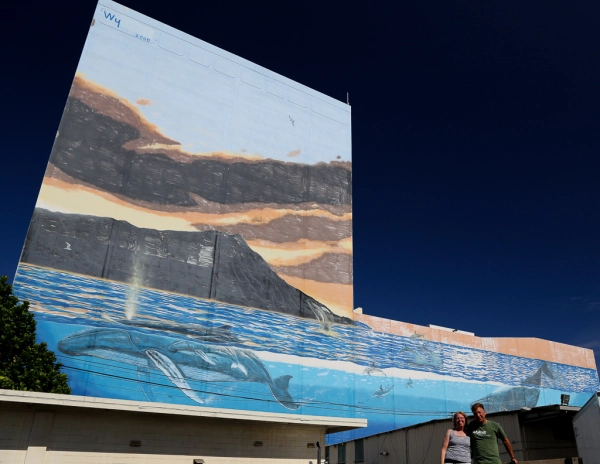

In Search of Wyland Walls

On the way from the airport to the hotel, from highway H1, we got to see “New Millenium” and while we knew we would have to come back to it to get our picture, as we drove by, I noticed there was another mural on the other side of the building. I was completely confused by that as there was no listing for another wall at that location. Anytime we’ve seen 2 walls on the same building they have had unique numbers on them.
As we drove out to them a few days later it was clear that both were Wyland walls and that this wall was “New Millenium”. We’re really glad we got to see this now as it’s quite faded.
Pacifica Airport Center
3049 Ualena Street
Honolulu, Hawaii
WW85 “New Millenium"
235 Feet Long x 151 Feet High
Dedicated December 15, 1999
Excerpt from @wylandfoundation on Instagram
Wyland’s first Whaling Wall in Hawaii was destroyed when the Prince Hotel built directly up against it in a total disregard for one of Hawaii’s favorite landmarks. “I have to admit I was pretty discouraged that this hotel had a total disregard for one of my favorite Whaling Walls, the 6th of what would be a planned 100,” Wyland says. “As fate would have it, a very similar wall near the Honolulu Airport became available many years later. I had drove past that wall on the H-1 freeway for years and imagined resurrecting the first mural there. Even better, the airport had 2 sides. I could simultaneously resurrect the vision for the old Whaling Wall on one side and paint a new one on the other side. The old one was easy, capturing the spirit of the first Honolulu Whaling Wall. The new one allowed me to give the thousands of commuters a sunrise view over Diamond Head crater. I loved the idea of making a wall disappear into the natural world.”
Standing up against the wall, Wyland somehow painted the warm sunset colors of the sky, Diamond Head crater, and the sunlit surface with humpback whales swimming across the wall. The above and below view gave a 2-worlds view of Hawaii’s humpback whales, the state’s marine mammal, along with dolphins and sea birds. Today the mural is the largest in the state of Hawaii with millions of cars viewing the old and the new Whaling Walls dedicated to the people of Hawaii.